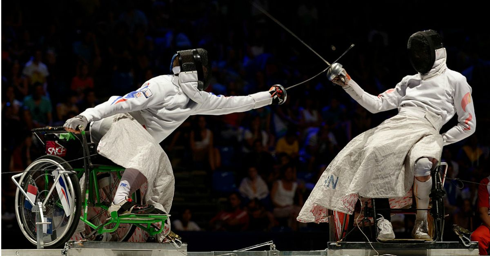

Depuis 1960, l’escrime en fauteuil roulant est présente lors de tous les Jeux Paralympiques. Cette discipline comporte trois armes différentes et se pratique par des athlètes ayant une déficience en bas du corps.
Les athlètes concourent avec des fauteuils fixés au sol. Ils ont alors une grande liberté de mouvement dans le haut du corps, tout en étant en sécurité. Toutefois, ils n’ont ni le droit de bouger leurs pieds ni leurs postérieurs.
Le saviez vous ?
Ce sport a été utilisé pour aider à la guérison des patients souffrant de lésions de la moelle épinière qui se déplaçaient en fauteuil roulant en leur donnant confiance et améliorant leur équilibre de base.
Aux Jeux Paralympiques, les athlètes sont divisés en deux catégories selon leurs capacités fonctionnelles. Toutefois, tous concourent dans les trois sous-disciplines suivantes :
- L’épée : c’est l’arme la plus lourde ! Cible : tout le corps au-dessus de la taille
- Le fleuret : c’est l’arme la plus légère ! Cible : le tronc
- Le sabre : un dérivé de l’épée de cavalerie ! Cible : au-dessus de la taille
Individuel, en équipe, il y en a pour tous les gouts !
Dans les épreuves individuelles, le premier tireur à faire 5 touches en 3 minutes gagne.
Dans les épreuves en équipe, un match est composé de 9 combats où chaque tireur affronte tous les membres de l’équipe adverse. Un combat, c’est 5 touches en 3 minutes.
Dans les deux cas, l’égalité est départagée par un combat en mort subite d’une minute.
N’attendez plus,
inscrivez-vous et supportez nos meilleurs escrimeurs !
Découvrez également les
anciens sports et les
sports paralympiques !
